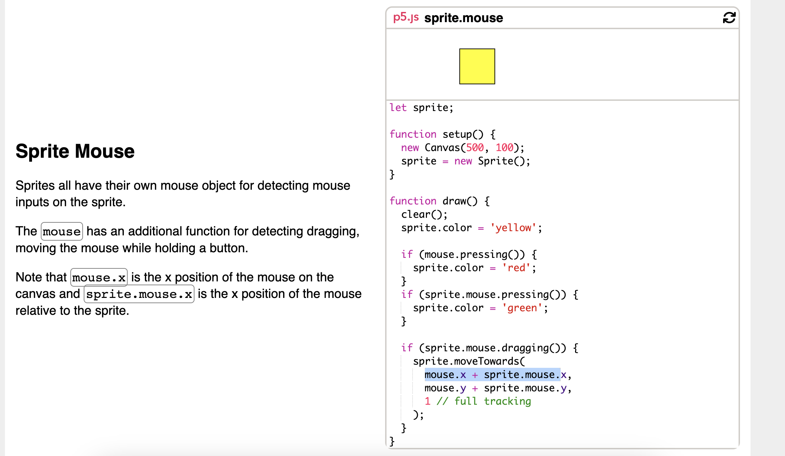
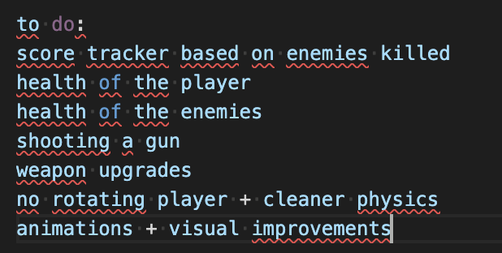
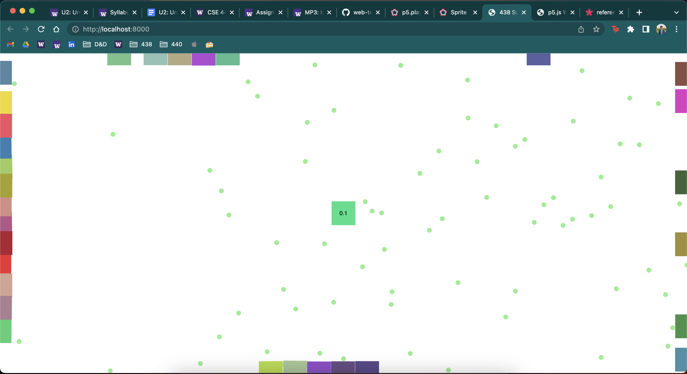
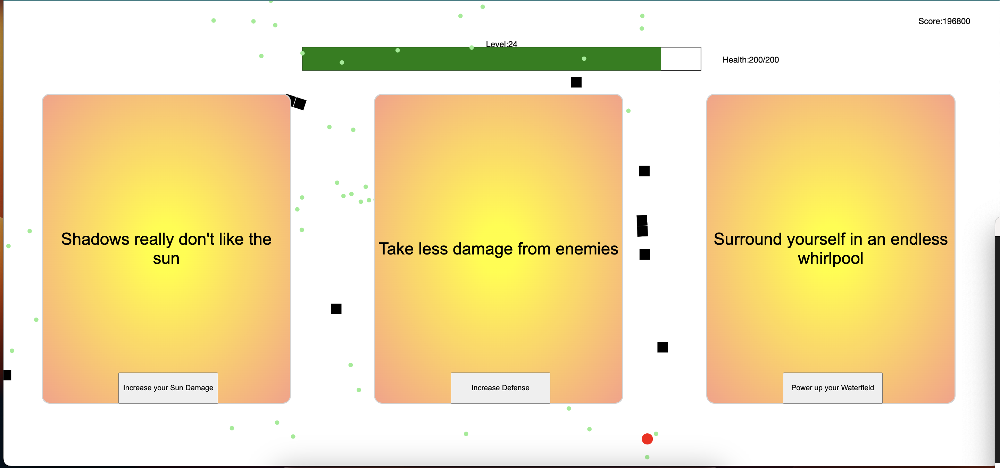
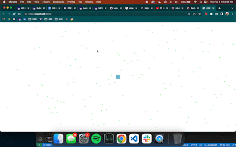

MP3 Writeup.
Overview and Usage
My 2D game which can be found here features a Sun celestial ninja who has the power to bend the elements of fire, earth, water, sun, and air. The ninja must defend against shadow warriors who are growing stronger and trying to attack the Sun itself. To fight these shadow warriors, the player can shoot sun orbs that damage enemies with the left mouse button and move around using the WASD keys. However, the player must be careful not to collide with the shadow warriors, as this will cause damage. As the player defeats more enemies, they'll collect experience points that can be used to level up and become even more powerful. After every few levels, the player can choose to upgrade their bending abilities or their health, speed, or defense, which will help them to defeat even more enemies and ultimately save the Sun from danger.

Development Process
Learning p5play
Before doing any coding, I wanted to make sure I had a general idea of how the p5play library worked. So, I spent a good amount of time looking through the examples the creator(s) have made. This helped me get familiar of how I wanted to structure my code and what was possible. From digging around in the beginning in the examples, I had already found a few examples that were applicable to my code such as overlapping dots that could be collected.

Then, I got started on a to do list of the things I wanted to create. I had to order and prioritize items based on what was most critical for the game to work, then I would focus on add ons such as visuals and sound. The main componenets of the game are enemies that follow the player and grow stronger over time, a way to damage the enemies, a way to power up from killing enemies, and a moving character. Then, after setting these foundations, I began to explore what I think would add more value to the game such as upgrades, visuals, sounds, a tutorial, game over screen, etc. Moving forward with the project as I completed these tasks, I made sure the enemy would scale over time exponentially such as their health and speed, whereas the player and upgrades would increase linearly.

Adding Sprites
First thing I needed to do was create a player, so that was super easy, as I had seen code in the example about the camera moving with the player. Next, was adding experience, which was also already an example from p5. The real challenge of this step were creating enemies that had substance, meaning they had health, experience, and would follow the character. I decided that these enemies would also look like the player and have the same deafult physics and visuals early on in the development to make it more simple. Creating spawning enemies was my first challenge because there was no examples on it. How could I make enemies that would spawn on the edge of the screen randomly? In addition, how would they follow the player. Spawning the enemies on the edge of the screen required me to randomly generate values along all axiis, which was a bit difficult to conceptually wrap my head around, but I got it working.

Chasing Enemies
The most difficult part: chasing the player, required me to read the documentation. Originally, I had the enemies have a force vector that would move towards the player everytime the draw function was called. However, this force vector would keep increasing, so the enemies over time would just magnetize to the player instantly. So, I had to keep reading more documentation for possible solutions and finally I found one that worked. This solution follows the player at a constant velocity that is set.

Damage to Enemies
Now, these enemies needed a way to take damage. The most important thing I needed to do was add an orb in the game that the player could shoot with the mouse button. I decided to opt for the mousepressed function created by p5 to recognize this. There was a lot of struggle trying to find a way to calculate where the bullet would go since it needed to move relative to the player's location and the window. This is extremely difficult with a moving player in p5play, since the player's x and y move without respect to the window size, but the originally set canvas size. To solve this, I first tried calculating a unit vector from where the mouse was pressed on the screen, but this didn't work out. So, I tried doing some more research to see if other people had a solution and it turns out in the p5play documentation they had a hidden example of how to accompish this. Another thing I had to account for was that when you create a group() in p5 AKA a class, you can not make up your own fields, so to represent enemy health, I chose to user their .life field. Although it makes semantic sense, the intention of that field is for representing the amount of time the sprite object has been alive.

Adding Powerups
Because the player also need to scale in power outside of shooting bullets, I decided to add powers up. I came up a list of power ups and what I wanted to do and implemented each one. The spinning stones was the most difficult because it required me to go back and remember how the unit circle worked to calculate x and y positions. The next most difficult was the bouncing airball due to the nature of calculating it's position and changing its velocity when hitting the window edges.

I decided to add randomly generated cards that would appear every few levels and pause the game for the user to select what powerup options of the three offered they wanted.

Adding Sound
Adding sound was quite easy since there are plenty examples of how to do it online. I spent a lot of time trying to find sounds and music based off what I thought sounded the best.
Improving Visuals
Updating the graphics was an easy, but very long process. I orginally thought of drawing my own art, which I did but it looked terrible. So, I instead opted for looking for pixel art of the things I wanted, compressed them to the appropriate size, and then attached them to the asset. It was a lot of work especially for animations that moved such as the main player ninja and rotating water.

Adding a Tutorial and Game Over
To top the game off before the deadline, I added a tutorial and game over screen to make it feel more complete. A sandwich is only good if it has bread.
Issue Deep-Dive
Lots of issues popped up for this project. Especially since I only had 1.5 weeks to work on it, it was a new library to me, and it is 800+ lines of code. A few issues I mentioned were: the enemies following too quickly and gathering speed over time, calculating orb direction when clicked, and determing how to change the velocity of the bouncing airball. Though, a few other issues popped up. One was not being able to draw a rectangle or text when calling noloop(). To circumvent this, whenever the user reaches a milestone level and selects upgrades, they choose from native javascript buttons. Even the backgrounds of the cards is a button, since I couldn't put p5 rectangles behind them. In addition, when reaching the end of development and adding visuals, I had the issue of my water upgrade animation appearing on top of the player. This was extremely frustrating because there were no sources on why this occured, but after a lot of experimentation, I learned that animation layers appear based on the order of when the sprite is created. Because the player is created in the beginning, to have anything under them they must have a sprite created before. So, to hack the upgrade, I made it invisible and off the screen until the player got the upgrade, finally making it visible again and following them. Lastly, during deployment I was having difficulty trying to get my game working. Turns out I wasn't configuring my rollup.config correctly to upload my music and image assets. I read Hannah's discord notes and figured out how to adjust accordingly.

Ideas and Future
- Adding boss levels
- Adding a sword as a possible starter weapon
- Improving general visuals and sound
- Improving performance and lag
- Balance abilities, enemies, and leveling up